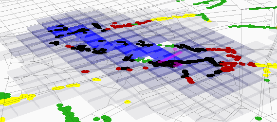
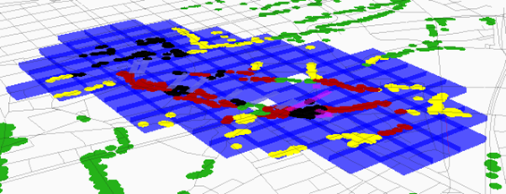
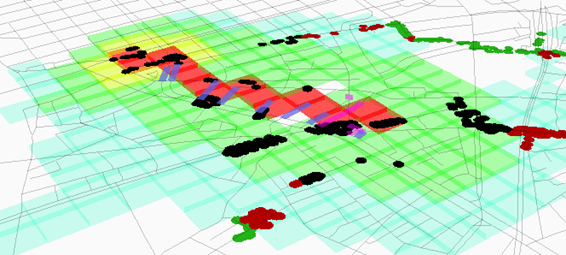
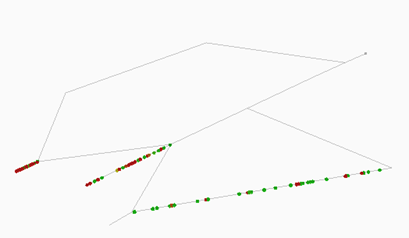
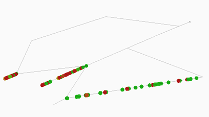
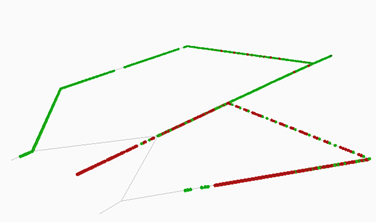
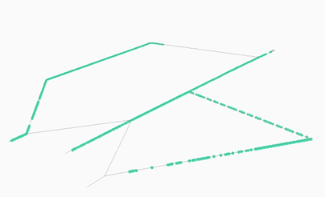
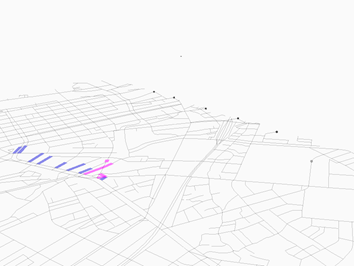
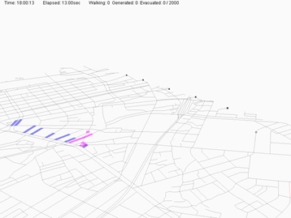
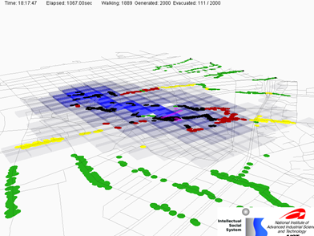

パッケージ nodagumi.ananPJ.misc
クラス CrowdWalkPropertiesHandler
- java.lang.Object
-
- nodagumi.ananPJ.misc.CrowdWalkPropertiesHandler
-
public class CrowdWalkPropertiesHandler extends java.lang.Object
プロパティファイルを読み込んで設定値を参照する.プロパティファイルの記述形式
-
JSON 形式
{ "設定項目" : 設定値, ・ ・ ・ "設定項目" : 設定値 } -
XML 形式(非推奨)
<?xml version="1.0" encoding="UTF-8"?> <!DOCTYPE properties SYSTEM "http://java.sun.com/dtd/properties.dtd"> <properties> <entry key="設定項目">設定値</entry> ・ ・ ・ </properties></pre>
プロパティファイルの設定項目
-
map_file (設定必須)
Map file へのファイルパス 設定値： 絶対パス | カレントディレクトリからの相対パス | ファイル名のみ (プロパティファイルと同じディレクトリに存在する場合はファイル名のみでも可) -
generation_file (設定必須)
Generation file へのファイルパス 設定値： 絶対パス | カレントディレクトリからの相対パス | ファイル名のみ (プロパティファイルと同じディレクトリに存在する場合はファイル名のみでも可) -
scenario_file (設定必須)
Scenario file へのファイルパス 設定値： 絶対パス | カレントディレクトリからの相対パス | ファイル名のみ (プロパティファイルと同じディレクトリに存在する場合はファイル名のみでも可) -
fallback_file
Fallback file(デフォルトセッティング値を記述した JSON ファイル) へのファイルパス このファイルの内容はリソースデータ "fallbackParameters.json" の内容よりも優先される。 設定値： 絶対パス | カレントディレクトリからの相対パス | ファイル名のみ (プロパティファイルと同じディレクトリに存在する場合はファイル名のみでも可) デフォルト値： なし -
pollution_file
Obstructer file へのファイルパス 設定値： 絶対パス | カレントディレクトリからの相対パス | ファイル名のみ (プロパティファイルと同じディレクトリに存在する場合はファイル名のみでも可) デフォルト値： なし -
interpolation_interval
Obstructer データを線形補間する間隔(秒) Obstructer file が設定されている時に設定する 設定値： 0 補間なし 1～n この間隔で補間する デフォルト値： 0 -
pollution_type
Obstructer type の設定 Obstructer file が設定されている時に設定する 設定値： Flood | Pollution デフォルト値： Flood
-
pollution_color_saturation
Obstructer level別の色の彩度の設定(図1,2) Obstructer file が設定されている時に設定する 濃 0.0←--------→100.0 薄 設定値： 有理数 デフォルト値： 0.0

図1 10.0のとき

図2 1.0のとき -
pollution_color
Obstructer地点の色の設定(図3) Obstructer file が設定されている時に設定する 設定値： none | hsv | red | blue | orange none： なし hsv： Obstructer levelごとに色を変える red： 赤色 blue： 青色 orange： オレンジ色 デフォルト値： orange
図3 hsv のとき -
use_ruby
Ruby Engine を使うかどうか。 設定値： true | false デフォルト値： false
-
use_irb
Irb Mode を使うかどうか。 use_ruby は true でなければならない。 設定値： true | false デフォルト値： false
-
ruby_load_path
Ruby の標準の LOAD_PATH に追加するパス。 複数のパスを追加する場合には、改行で区切る。 設定値： 改行区切りの path 文字列。 デフォルト値： ""
-
ruby_init_script
Ruby Engine 初期化のスクリプト。 一般に、"require 'file'" 等を指定するが、基本、ruby の式なら何でもOK。 設定値： ruby の script の文字列。 デフォルト値： ""
-
ruby_simulation_wrapper_class
updateEveryTick() などのシミュレーション実行制御用のRubyクラス。 CrowdWalkSimulator クラスを継承していることが望ましい。 シミュレーションの初期化でインスタンスが作成され、 EvacuationSimulatorのインスタンスが @body にセットされる。 updateEveryTick() の先頭で preCycle(time) が、 終わりに postCycle(time) が呼ばれる。 空文字列もしくは null なら、インスタンスは生成しない。 設定値： ruby クラス名。 デフォルト値： null
-
camera_file
3D シミュレーション画面のカメラワーク設定ファイル。(JSON形式) 3D シミュレーションウィンドウのオープン時に読み込んで Replay チェックボックスを ON にする。 設定値： 絶対パス | カレントディレクトリからの相対パス | ファイル名のみ (プロパティファイルと同じディレクトリに存在する場合はファイル名のみでも可) デフォルト値： なし -
camera_2d_file
2D シミュレーション画面のカメラワーク設定ファイル。(JSON形式) 2D シミュレーションウィンドウのオープン時に読み込んで Replay チェックボックスを ON にする。 設定値： 絶対パス | カレントディレクトリからの相対パス | ファイル名のみ (プロパティファイルと同じディレクトリに存在する場合はファイル名のみでも可) デフォルト値： なし -
link_appearance_file
各リンクの設定を記述した設定ファイル(JSON形式) 設定値： link_appearance_fileへのファイルパス デフォルト値： なし 記載方法：
LinkAppearanceBase -
node_appearance_file
各ノードの設定を記述した設定ファイル(JSON形式) 設定値： node_appearance_fileへのファイルパス デフォルト値： なし 記載方法：
NodeAppearanceBase -
agent_appearance_file
エージェントの表示形式を記述した設定ファイル(JSON形式) 設定値： agent_appearance_fileへのファイルパス デフォルト値： なし 記載方法：
AgentAppearanceBase -
randseed
乱数発生のシード 設定値： 整数値 デフォルト値： なし(シード指定なし)
-
evacuated_agents_log_file
ゴールノード別の脱出エージェント数をステップごとに記録するログ 設定値： evacuated_agents_log file へのファイルパス デフォルト値： なし
-
node_order_of_evacuated_agents_log
evacuated_agents_log の出力カラムの並び順 設定値： ゴールノードを示すタグをカンマで区切って並べる。ゴールノードがすべて揃っている必要はない デフォルト値： なし
-
agent_movement_history_file
ゴールまでたどり着いたエージェントのゴールした時点でのログ(?) 設定値： agent_movement_history file へのファイルパス デフォルト値： なし ログの記述内容：
AgentHandler.agentMovementHistoryLoggerFormatter -
agent_trail_log
ゴールまでたどり着いたエージェントのゴールした時点でのJSON形式のログ。 ログの記述内容：
AgentHandler.agentTrailLogFormatter設定値：AgentHandler.setupAgentTrailLogger()デフォルト値： なし -
individual_pedestrians_log_dir
個別のエージェントに対するログデータを保管する場所の指定 ディレクトリを指定した時のみログを収集する。 設定値： ディレクトリへの絶対パス | カレントディレクトリからの相対パス デフォルト値： なし ログの記述内容：
AgentHandler.individualPedestriansLoggerFormatter -
record_simulation_screen
シミュレーション画面のスクリーンショットを記録する ※clear_screenshot_dir が true ではなく、かつ出力先ディレクトリに画像ファイルが存在する 場合はエラー終了する。 ※この設定をtrueにすると、シミュレーションが遅くなる。 設定値： true | false デフォルト値： false -
screenshot_dir
シミュレーション画面のスクリーンショットを保存するディレクトリ 設定値： ディレクトリへの絶対パス | カレントディレクトリからの相対パス デフォルト値： screenshots
-
clear_screenshot_dir
スクリーンショットディレクトリに存在する画像ファイル(.bmp|.gif|.jpg|.png)を すべて削除する。 ※有効にするためには screenshot_dir の設定が必要 設定値： true | false デフォルト値： false
-
screenshot_image_type
スクリーンショットの画像ファイル形式 設定値： bmp | gif | jpg | png デフォルト値： png
-
create_log_dirs
log および スクリーンショットの directory がないとき、自動生成するかどうか。 設定値： true | false デフォルト値： false
-
use_relative_path_from_prop
各種ファイルの指定の相対パスが、この properties file の位置からの相対パスを使うかどうか 設定値： true | false デフォルト値： true
-
defer_factor
1ステップごとの待ち時間(ミリ秒単位) この設定値を小さくするとシミュレーションは早く進み、大きくするとシミュレーションは遅く進む。 早 0←--------→299 遅 設定値： 0～299 デフォルト値： 0
-
vertical_scale
3D シミュレーション画面のマップに対する垂直方向のスケールの大きさ 設定値： 0.1～10.0 デフォルト値： 1.0
-
agent_size
エージェントの表示サイズ(図6,7) 設定値： 0.1～30.0 デフォルト値： 1.0

図6 1.0のとき

図7 2.0のとき -
agent_size_2d
2D シミュレーション画面上のエージェントの表示サイズ(ピクセル) 設定値： 0.1～30.0 デフォルト値： agent_size の値
-
agent_size_3d
3D シミュレーション画面上のエージェントの表示サイズ(m) 設定値： 0.1～30.0 デフォルト値： agent_size の値
-
zoom
シミュレーション画面全体の表示倍率 camera_fileを設定し、シミュレーション画面のViewでReplayにチェックを入れたときに適用される。 設定値： 0.0～9.9 デフォルト値： 1.0
-
background_color
3D シミュレーション画面の背景色 設定値： 標準のHTML色名 | 16進RGB値("#ffffff") デフォルト値： white -
outline_color
3D シミュレーション画面で Obstructer 領域を確認するための色 設定値： 標準のHTML色名 | 16進RGB値("#ffffff") デフォルト値： lime -
centering_by_node_average
3D シミュレーション画面のマップの中心点を従来の方法(全ノード位置の平均)で算出する。 デフォルトはマップ全体に外接する矩形の中心点。 設定値： true | false デフォルト値： false
-
change_agent_color_depending_on_speed
エージェントの移動速度によってエージェントの色を変化させる(図8,9) 設定値： true | false デフォルト値： true

図8 true のとき

図9 false のとき -
drawing_agent_by_triage_and_speed_order
エージェントをトリアージレベルと移動速度でソートして表示する。 エージェントが重なっている時には、より重症な(Greenの場合は速度が遅い)エージェントが表示される様になる。 設定値： true | false デフォルト値： true
-
show_status
シミュレーション画面上にステータスラインを表示する。 通常のシミュレーション画面にはステータスラインは常に表示されているが、この設定を有効にすると スクリーンショットにもステータスラインが表示される(図10,11)。 設定値： none | top | bottom none： 表示しない top： 上側に表示する bottom：下側に表示する デフォルト値： none
図10 show_status を有効にしなかった場合のスクリーンショット

図11 show_status を top に設定した場合のスクリーンショット -
show_logo
シミュレーション画面に AIST ロゴを表示する(図12) 設定値： true | false デフォルト値： false

図12 -
simulation_window_open
property fileを読み込んだ際に自動的に Simulation ウィンドウを開く 設定値： true | false デフォルト値： false
-
auto_simulation_start
自動的に Simulation ウィンドウを開いて自動的にシミュレーションを開始する 設定値： true | false デフォルト値： false
-
exit_with_simulation_finished
GUI モード時にシミュレーション終了と同時にプログラムを終了する 設定値： true | false デフォルト値： false
-
mental_map_rules
* 探索において、各リンクの主観的距離の変更ルールを記述。 設定値： ルールを表す JSON 形式の式。 デフォルト値： null ルールの記述方法：
PathChooser -
show_background_image
2D シミュレーション画面に背景画像を表示する。 設定値： true | false デフォルト値： false
-
color_depth_of_background_image
背景画像の色の濃さ 設定値： 0.1 | 0.2 | 0.3 | 0.4 | 0.5 | 0.6 | 0.7 | 0.8 | 0.9 | 1.0 デフォルト値： 1.0
-
zone
マップデータの平面直角座標系の系番号 国土地理院の地理院タイルを用いた背景地図表示を有効にする。 マップファイルのルートの <Group> タグに zone 属性があれば省略可能。 マップ範囲の地理院タイルを読み込むために、初回のみ国土地理院の Web サイトへのアクセスが発生する。 (読み込んだ画像は CrowdWalk/crowdwalk/cache ディレクトリにキャッシュされる) 設定値： 1～19 デフォルト値： なし
-
gsi_tile_name
地理院タイルのタイル名(データID) 背景地図に使用する地理院タイルを指定する。 標準地図/淡色地図/English/数値地図25000（土地条件）/白地図/色別標高図/写真が選択可能。 ≪地理院タイル一覧≫参照。 設定値： std | pale | english | lcm25k_2012 | blank | relief | ort デフォルト値： pale
-
gsi_tile_zoom
地理院タイルのズームレベル 背景地図に使用する地理院タイルのズームレベルを指定する。 ≪地理院タイル仕様≫参照。 設定値： 5～18(タイル名により有効範囲が異なる) デフォルト値： 14
-
show_background_map
シミュレーション画面に背景地図を表示する。 設定値： true | false デフォルト値： false
-
color_depth_of_background_map
背景地図の色の濃さ 設定値： 0.1 | 0.2 | 0.3 | 0.4 | 0.5 | 0.6 | 0.7 | 0.8 | 0.9 | 1.0 デフォルト値： 1.0
-
coastline_file
海岸線データファイル(GeoJSON形式)のパス名 複数の海岸線データが必要な場合(マップが2県にまたがる等)にはファイルのパス名をカンマ(,)で区切って並べる。 設定値： 絶対パス | カレントディレクトリからの相対パス | ファイル名のみ (プロパティファイルと同じディレクトリに存在する場合はファイル名のみでも可) デフォルト値： なし -
show_the_sea
シミュレータ起動時の海面表示の ON/OFF 設定値： true | false デフォルト値： false
-
osm_conversion_file
マップエディタで OpenStreetMap データを読み込む際に使用する設定ファイルのパス名 設定値： 絶対パス | カレントディレクトリからの相対パス | ファイル名のみ (プロパティファイルと同じディレクトリに存在する場合はファイル名のみでも可) デフォルト値： なし -
rotation_angle
マップエディタで表示されるマップの回転角度の初期値 設定値： -180.0～180.0 デフォルト値： 0.0
-
rotation_angle_locking
マップエディタで表示されるマップの回転角度をロックする 設定値： true | false デフォルト値： false
-
disable_no_hint_for_goal_log
"No hint for goal" ログを出力しない 設定値： true | false デフォルト値： false
-
legacy
legacy モードにする GUI シミュレータで POLYGON | STRUCTURE タグをポリゴンの識別子として扱う 設定値： true | false デフォルト値： false
-
validate
マップデータを検証する 問題があればシミュレーションを実行せずに終了する 設定値： true | false デフォルト値： false
-
height_effective
リンク長の計算に両端ノードの標高差を反映するかどうか マップエディタでリンクを追加する際に、length 値の計算に適用される。 false ならば平面上の長さになる。 なおシェープファイル・MRD・OSM 読み込み機能には適用されず、これらのリンク長はすべて平面上の長さになる。 設定値： true | false デフォルト値： true
-
-
-
フィールドの概要
フィールド 修飾子とタイプ フィールド 説明 protected intexitCountprotected java.lang.StringfallbackFilefallback fileprotected java.lang.StringgenerationFileエージェント生成ルールファイルprotected booleanisAllAgentSpeedZeroBreakprotected booleanlegacylegacy モードprotected TermmentalMapRules経路探索における、各リンクの主観的距離の変更ルールprotected java.lang.StringnetworkMapFile地図ファイルprotected java.lang.StringpollutionFile汚染・障害物？protected Termprop設定位情報を格納しておくところ。protected java.lang.StringpropertiesFile設定ファイルへのPath.protected longrandseedprotected java.lang.StringscenarioFileイベントシナリオファイル。
-
コンストラクタの概要
コンストラクタ コンストラクタ 説明 CrowdWalkPropertiesHandler()コンストラクタCrowdWalkPropertiesHandler(java.lang.String _propertiesFile)コンストラクタ
-
メソッドの概要
すべてのメソッド staticメソッド インスタンス・メソッド concreteメソッド 修飾子とタイプ メソッド 説明 CrowdWalkPropertiesHandlerclone()このオブジェクトのコピーを作成して返すbooleandoesCreateLogDirAutomatically()check property to create directories for logs automatically if not exists.java.lang.StringfurnishPropertiesDirPath(java.lang.String path, boolean forceP, boolean absP)propertiesFile の directory を prefix として追加する。booleangetBoolean(java.lang.String key, boolean defaultValue)get Boolean propertyjava.lang.StringgetDirectoryPath(java.lang.String key, java.lang.String defaultValue)get directory path specified by key.doublegetDouble(java.lang.String key, double defaultValue)get Double propertyintgetExitCount()java.lang.StringgetFallbackFile()fallback file を取得java.lang.StringgetFilePath(java.lang.String key, java.lang.String defaultValue)get file path.java.lang.StringgetFilePath(java.lang.String key, java.lang.String defaultValue, boolean existing)get file path.java.lang.StringgetFurnishedPath(java.lang.String key, java.lang.String defaultValue)get furnished path.java.lang.StringgetGenerationFile()intgetInteger(java.lang.String key, int defaultValue)get Integer propertybooleangetIsAllAgentSpeedZeroBreak()TermgetMentalMapRules()java.lang.StringgetNetworkMapFile()java.util.ArrayList<java.lang.String>getPathList(java.lang.String key, java.util.ArrayList<java.lang.String> defaultValue)パスのリストを取得。java.util.ArrayList<java.lang.String>getPathList(java.lang.String key, java.util.ArrayList<java.lang.String> defaultValue, java.lang.String separator)パスのリストを取得。java.lang.StringgetPollutionFile()java.lang.StringgetPropertiesDirAbs()properties file の directory の絶対 Path を返す。java.lang.StringgetPropertiesDirRel()properties file の directory の相対 Path を返す。java.lang.StringgetPropertiesFile()Get a properties file name.TermgetPropertiesTerm()get property in Termstatic java.lang.StringgetProperty(Term prop, java.lang.String key)get property (raw)longgetRandseed()java.lang.StringgetScenarioFile()java.lang.StringgetString(java.lang.String key, java.lang.String defaultValue)get String propertyjava.lang.StringgetStringInPattern(java.lang.String key, java.lang.String defaultValue, java.lang.String[] pattern)TermgetTerm(java.lang.String key)get Term propertyTermgetTerm(java.lang.String key, Term defaultValue)get Term propertybooleanhasKeyRecursive(java.lang.String... keys)get Term propertybooleanisDefined(java.lang.String key)check definedstatic booleanisDisableNoHintForGoalLog()booleanisLegacy()static voidmain(java.lang.String[] args)main(?)static voidsetDisableNoHintForGoalLog(boolean value)voidsetPropertiesFile(java.lang.String _path)Set a properties file name.static voidsetValidation(boolean value)static booleanvalidation()
-
-
-
フィールドの詳細
-
propertiesFile
protected java.lang.String propertiesFile
設定ファイルへのPath.
-
networkMapFile
protected java.lang.String networkMapFile
地図ファイル
-
pollutionFile
protected java.lang.String pollutionFile
汚染・障害物？ファイル
-
generationFile
protected java.lang.String generationFile
エージェント生成ルールファイル
-
scenarioFile
protected java.lang.String scenarioFile
イベントシナリオファイル。
-
fallbackFile
protected java.lang.String fallbackFile
fallback file
-
randseed
protected long randseed
-
exitCount
protected int exitCount
-
isAllAgentSpeedZeroBreak
protected boolean isAllAgentSpeedZeroBreak
-
mentalMapRules
protected Term mentalMapRules
経路探索における、各リンクの主観的距離の変更ルール
-
legacy
protected boolean legacy
legacy モード
-
-
コンストラクタの詳細
-
CrowdWalkPropertiesHandler
public CrowdWalkPropertiesHandler()
コンストラクタ
-
CrowdWalkPropertiesHandler
public CrowdWalkPropertiesHandler(java.lang.String _propertiesFile)
コンストラクタ
-
-
メソッドの詳細
-
getPropertiesFile
public java.lang.String getPropertiesFile()
Get a properties file name.- 戻り値:
- Property file name.
-
setPropertiesFile
public void setPropertiesFile(java.lang.String _path)
Set a properties file name.- パラメータ:
_path- a properties file name.
-
getPropertiesDirAbs
public java.lang.String getPropertiesDirAbs()
properties file の directory の絶対 Path を返す。
-
getPropertiesDirRel
public java.lang.String getPropertiesDirRel()
properties file の directory の相対 Path を返す。
-
furnishPropertiesDirPath
public java.lang.String furnishPropertiesDirPath(java.lang.String path, boolean forceP, boolean absP)
propertiesFile の directory を prefix として追加する。- パラメータ:
path- : もととなる path。forceP- : 強制的に追加するかどうか。 false であれば、path に parent がない場合のみ追加。 true なら、pathが絶対path以外は強制的に追加。absP- : 絶対pathを追加するかどうか。- 戻り値:
- 変更したpath。
-
getNetworkMapFile
public java.lang.String getNetworkMapFile()
-
getPollutionFile
public java.lang.String getPollutionFile()
-
getGenerationFile
public java.lang.String getGenerationFile()
-
getScenarioFile
public java.lang.String getScenarioFile()
-
getFallbackFile
public java.lang.String getFallbackFile()
fallback file を取得
-
getRandseed
public long getRandseed()
-
getExitCount
public int getExitCount()
-
getIsAllAgentSpeedZeroBreak
public boolean getIsAllAgentSpeedZeroBreak()
-
getMentalMapRules
public Term getMentalMapRules()
-
isLegacy
public boolean isLegacy()
-
isDisableNoHintForGoalLog
public static boolean isDisableNoHintForGoalLog()
-
setDisableNoHintForGoalLog
public static void setDisableNoHintForGoalLog(boolean value)
-
validation
public static boolean validation()
-
setValidation
public static void setValidation(boolean value)
-
clone
public CrowdWalkPropertiesHandler clone()
このオブジェクトのコピーを作成して返す- オーバーライド:
cloneクラス内java.lang.Object
-
isDefined
public boolean isDefined(java.lang.String key)
check defined
-
getProperty
public static java.lang.String getProperty(Term prop, java.lang.String key)
get property (raw)
-
getPropertiesTerm
public Term getPropertiesTerm()
get property in Term
-
getString
public java.lang.String getString(java.lang.String key, java.lang.String defaultValue)
get String property
-
getStringInPattern
public java.lang.String getStringInPattern(java.lang.String key, java.lang.String defaultValue, java.lang.String[] pattern) throws java.lang.Exception
- 例外:
java.lang.Exception
-
getBoolean
public boolean getBoolean(java.lang.String key, boolean defaultValue) throws java.lang.Exception
get Boolean property- 例外:
java.lang.Exception
-
getInteger
public int getInteger(java.lang.String key, int defaultValue) throws java.lang.Exception
get Integer property- 例外:
java.lang.Exception
-
getDouble
public double getDouble(java.lang.String key, double defaultValue) throws java.lang.Exception
get Double property- 例外:
java.lang.Exception
-
hasKeyRecursive
public boolean hasKeyRecursive(java.lang.String... keys)
get Term property
-
doesCreateLogDirAutomatically
public boolean doesCreateLogDirAutomatically()
check property to create directories for logs automatically if not exists.
-
getDirectoryPath
public java.lang.String getDirectoryPath(java.lang.String key, java.lang.String defaultValue) throws java.lang.Exception
get directory path specified by key.- 例外:
java.lang.Exception
-
getFurnishedPath
public java.lang.String getFurnishedPath(java.lang.String key, java.lang.String defaultValue)
get furnished path. properties file の directory を補ったパスを返す。 存在チェックなどはしない。
-
getFilePath
public java.lang.String getFilePath(java.lang.String key, java.lang.String defaultValue) throws java.lang.Exception
get file path. if not exist, raise Exception.- 例外:
java.lang.Exception
-
getFilePath
public java.lang.String getFilePath(java.lang.String key, java.lang.String defaultValue, boolean existing) throws java.lang.Exception
get file path. If existing is true, cause Exception when the file does not exist. If existing is false, cause Exception when the file exists.- 例外:
java.lang.Exception
-
getPathList
public java.util.ArrayList<java.lang.String> getPathList(java.lang.String key, java.util.ArrayList<java.lang.String> defaultValue)
パスのリストを取得。 パスは区切り記号で区切られているとする。 区切り記号のデフォルトは改行。 [2019-02-05: I.Noda] 一部の json ライブラリでは、文字列中の改行は規則違反となる。 なので、改行以外に、 値そのものが文字列ではなく、文字列のリストも受け付けられるようにする。
-
getPathList
public java.util.ArrayList<java.lang.String> getPathList(java.lang.String key, java.util.ArrayList<java.lang.String> defaultValue, java.lang.String separator)
パスのリストを取得。 パスは区切り記号で区切られているとする。 [2019-02-05: I.Noda] もしくは、文字列のリスト（配列）も受け付けるとする。
-
main
public static void main(java.lang.String[] args) throws java.io.IOException
main(?)- 例外:
java.io.IOException
-
-